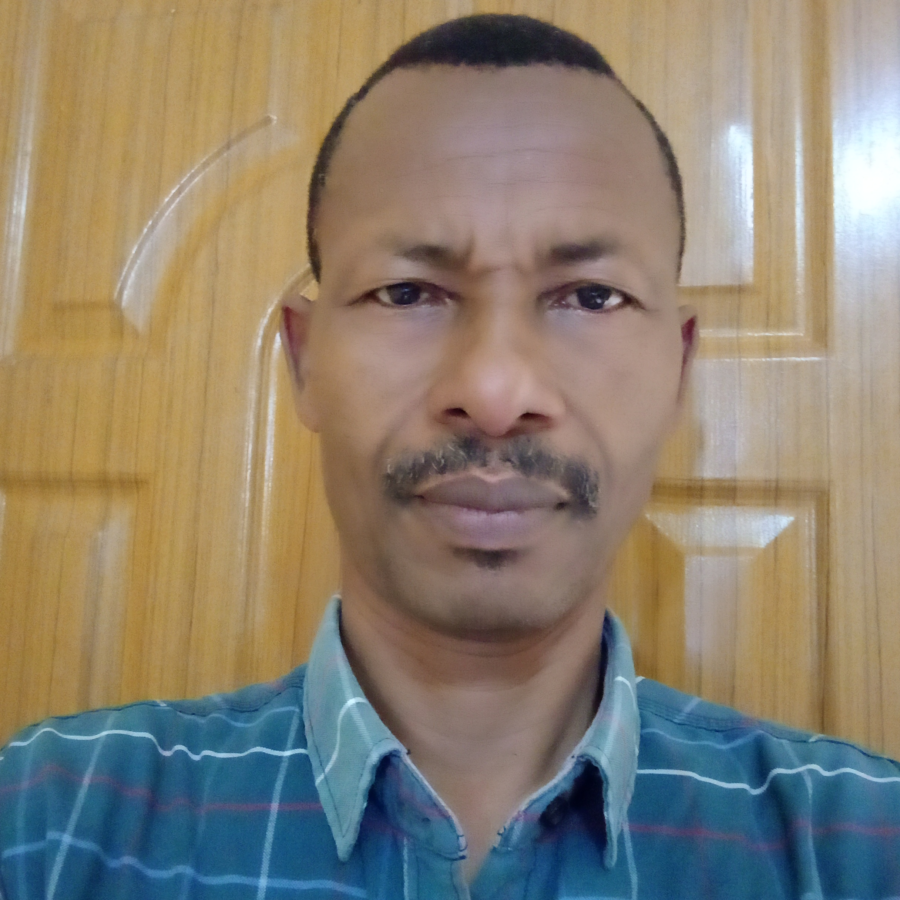

My Resume

<Kelil Mohammed
Objective Statement
I wounld like to enhance my technical and soft skills by taking up challengning assignments and expanding my knowledge through learning.
Educational Background
- April 30, 2019: M.Sc. in Computer Networking from Jimma University
- June 25, 2015: B.Sc in Information Technology from Jimma University
- Sep 3, 2006: B.Ed in Mathematics from Haramaya University
- July 5,2001: Teaching Mathematics Diploma Certificate from Kotebe Collge of Teachers Education
Work Experience
skills
Certificates
Hobbies
Contact Me